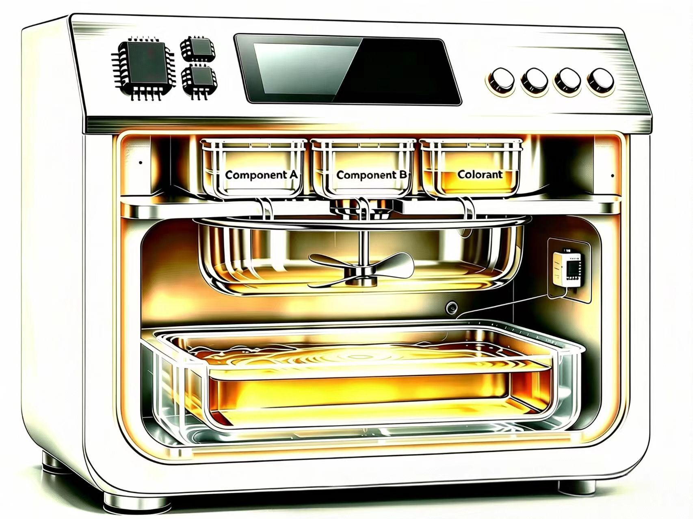

Electronic control
A chip-based control unit coordinates the middle heating module. The interface provides a simple point of interaction.
Meet retention. A concept that brings electronic control, resin heating and mold encapsulation together — giving an ordinary sample an amber-like form.

retention explores how a stone or other suitable sample could be enclosed in transparent yellow resin. The proposed device combines control, heating and molding within a single compact form, making the transformation from loose sample to encapsulated object easy to understand.
Developed as a concept for project presentation and material exploration, it also opens a conversation about future product applications. Material suitability and engineering performance remain to be validated.
The cutaway reveals the proposed arrangement. Each layer plays a distinct role in the encapsulation process.
A chip-based control unit coordinates the middle heating module. The interface provides a simple point of interaction.
The proposed heating unit melts a suitable resin into a flowing material, ready to enter the mold below.
The sample sits inside a mold cavity. Yellow resin flows around it to create the envisioned amber-like enclosure.
Illustrative concept cutaway. Internal components and the resin process are proposals, not a finalized engineering design.
Select a step to explore the concept.
The final process will depend on the selected resin.
Potential uses to explore as the concept develops, rather than confirmed product capabilities.
A visual starting point for discussing materials, product design and the relationship between a sample and its surrounding form.
Explore how suitable stones and material samples might be presented within a transparent, amber-colored enclosure.
Investigate small display objects and keepsake concepts, subject to material compatibility and sample suitability.
Transparent yellow resin gives the sample an amber-like appearance while keeping its shape and texture visible. This rendering illustrates the intended aesthetic; the final finish is still to be explored.
For project discussions, collaboration and future product enquiries. Contact details will be added here.
To be announced